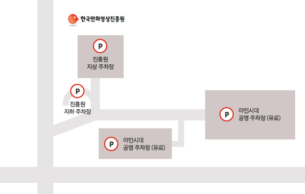

오시는길
한국만화영상진흥원으로,
오시는 길을 안내합니다.
경기도 부천시 길주로 1 (상동)
경기도 부천시 원미구에 위치한 한국만화영상진흥원은 지하철과 버스로 오실 수 있으며, 자가용으로 오실 경우 중동IC에 인접하여 있고 넓은 주차시설을 구비하고 있어 주차하기 용이합니다.
주차장 안내
- 한국만화영상진흥원 주차장
- 주차료는 무료입니다.
- 유모차 이용 시 지하1층에 주차하시면 이동이 편리합니다.
- 야인시대 주차장
- 야인시대 공영주차장 주차료는 선불입니다.
- 한국만화박물관 주차공간이 협소한 관계로 중형차 이상은 야인시대 공영주차장을 이용해 주십시오.
자가용 이용시
외곽순환도로네비게이션 검색어 : 한국만화박물관, 한국만화영상진흥원, 판타스틱 스튜디오, 야인시대 세트장
- 판교방면 출발
- 외곽순환도로 일산방향 → 중동 IC (인천방향) → 한국만화영상진흥원
- 일산방면 출발
- 외곽순환도로 판교방향 → 중동 IC(인천방향) → 한국만화영상진흥원
- 경인고속도로
-
경인고속도로 (인천방향) → 서운 JC에서 외곽순환도로 판교방향
→ 중동 IC (인천방향)→ 한국만화영상진흥원
- 계남대로
- 계남대로에서 인천방향 → 중동IC 지하도 → 한국만화영상진흥원
지하철 이용시
- 77호선
- 삼산체육관역 하차, 5번 출구 (도보 3분 소요)
- 11호선
- 부개역 하차, 2번 출구(삼산체육관 방향)로 나와 버스 이용, 79번 한국만화박물관 하차 (10분 소요)
- 송내역 하차, 2번 출구로 나와 북부역 광장에서 버스 이용, 37번 한국만화박물관 하차(20분 소요) 또는 87번 상동호수공원, 한국만화박물관 후문 하차(25분 소요)
대중교통 이용시
- 79번부개역 > 부개역, 혜광교회, 부평동중 > 한국만화박물관
- 87번송내역 > 송내역, 중앙공원, 현대백화점, 부천한국만화박물관 > 한국만화박물관
- 37번송내역 > 송내역, 현대백화점, 부천한국만화박물관 > 한국만화박물관
- 588번부개주공3단지 > 부개주공3단지, 부개여고, 농협로타리, 부개여고, 호수공원 > 아인스월드
- 1200번부평구청 > 부평구청, 부개주공, 합정전철역, 신촌전철역, 이대역, 서울역 > 부개주공아파트
- 7-2번송내역 > 송내역, 반달마을구, 경남아파트, 삼성홈플러스, 석천초등학교 > 야인시대세트장
- 5-2번부천북부역 > 부천북부역, 대성병원, 원미구청, 복사골마을, 송내역, 삼성홈플러스 > 한국만화박물관
- 5-5번우일주유소 > 우일주유소, 부천북부역, 원미구청, 부천체육관, 은하마을 > 야인시대세트장 후문
- 23-2번계수동 > 계수동, 신앙촌입구, 청구아파트, 부천대학, 부천시청, 드림피아 > 영상단지후문
- 83번영등포 > 영등포역, 신도림역, 구로역, 역곡남부역, 복사골문화센타 > 야인시대후문
- 53번소사역 > 중동역 > 송내역 > 상동역 > 삼삼체육관역.영상문화단지정문 > 아인스월드(회차점)